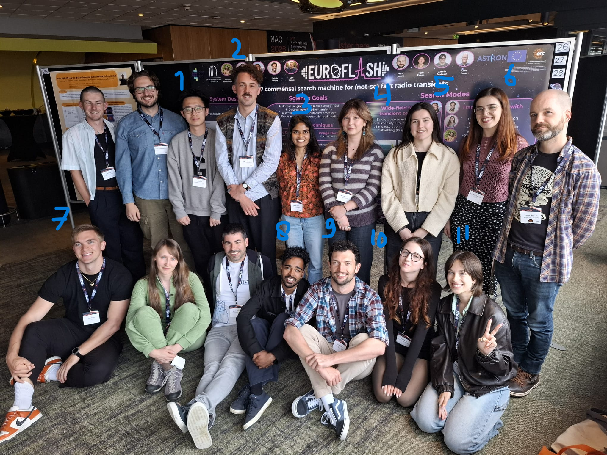

I want to understand our place in the Universe by building innovative radio telescopes and algorithms for catching flashes of light from other galaxies that signal extreme physics.
I am an assistant professor in high-energy astrophysics at the University of Amsterdam's Anton Pannekoek Institute for Astronomy (UvA/API) and a visiting scientist at ASTRON, Netherlands Institute for Radio Astronomy. I co-lead the AstroFlash research group and am supported by an ERC Starting Grant ("EnviroFlash"; Grant agreement No. 101223057) and an NWO Veni grant (VI.Veni.222.295).
Team
The Netherlands half of the AstroFlash team at NAC 2026 with my trainees numbered:
- Haotian Sun (MSc; co-advised w/ Jason Hessels)
- That's me!
- Rujuta Mokal (PhD)
- Andreea Șuta (PhD)
- Tia Nolan (MSc; co-advised w/ Rob Kavanagh)
- Inés Pastor-Marazuela (postdoc; co-advised w/ Jason Hessels)
- Dirk Kuiper (PhD; co-advised w/ Jason Hessels & Cees Bassa)
- Sylvain Ranguin (PhD; co-advised w/ Jason Hessels & Antonia Rowlinson)
- Danté Hewitt (postdoc)
- Nina Kaplina (PhD)
- Alex Moroianu (PhD; co-advised w/ Jason Hessels & Benito Marcote)

Publications
For a complete list, see ADS or arXiv. Some highlights follow, with underlined author names indicating students that I have advised.
- Tied-array beam flat-fielding, Kuiper, Bassa, ZP & Hessels, in press ADS
- The second CHIME/FRB catalog of fast radio bursts, CHIME/FRB Collaboration, 2026 ApJS 283, 34 ADS
- A Milliarcsecond Localization Associates FRB 20190417A with a Compact Persistent Radio Source and an Extreme Magnetoionic Environment, Moroianu et al., 2026 ApJL 996, 16 ADS
- CHIME/FRB Outriggers: Design Overview, CHIME/FRB Collaboration, 2025 ApJ 993, 55 ADS
- Improved Constraints on the Faraday Rotation toward Eight Fast Radio Bursts Using Dense Grids of Polarized Radio Galaxies, Pandhi, Gaensler, ZP et al., 2025 ApJ 982, 146 ADS
- Magnetospheric origin of a fast radio burst constrained using scintillation, Nimmo, ZP et al., 2025 Nature 637, 48 ADS
- Polarization properties of the 128 non-repeating fast radio bursts from the first CHIME/FRB baseband catalog, Pandhi, ZP, Mckinven et al., 2024 ApJ 968, 50 ADS
- Modeling the Morphology of Fast Radio Bursts and Radio Pulsars with fitburst, Fonseca, ZP, Breitman et al., 2024 ApJS 271, 49 ADS
- Propagation effects at low frequencies seen in the LOFAR long-term monitoring of the periodically active FRB 20180916B, Gopinath, Bassa, ZP et al., 2024 MNRAS 527, 4, pp.9872-9891 ADS
- CHIME/FRB discovery of 25 repeating fast radio burst sources, CHIME/FRB Collaboration (ZP corresponding author), 2023 ApJ 947, 83 ADS
- Fast radio burst morphology in the first CHIME/FRB catalog, ZP, Good, Kaspi et al., 2023 ApJ 923, 1 arXiv
- The first CHIME/FRB fast radio burst catalog, CHIME/FRB Collaboration, 2021, ApJS 257, 59 arXiv
- LOFAR detection of 110-188 MHz emission and frequency-dependent activity from FRB 20180916B, ZP, Michilli, Bassa et al., ApJL 911, L3 arXiv
- A bright millisecond-duration radio burst from a Galactic magnetar, CHIME/FRB Collaboration et al., 2020 Nature 587, 54 arXiv
- Periodic activity from a fast radio burst source, CHIME/FRB Collaboration et al., 2020 Nature 582, 351 arXiv
- The CHIME Fast Radio Burst project: system overview, CHIME/FRB Collaboration, 2018 ApJ 863, 48 arXiv
- LOFAR discovery of the fastest-spinning millisecond pulsar in the Galactic field, Bassa, ZP, Hessels et al., 2017 ApJL 846, L20 arXiv
- A millisecond pulsar discovery in a survey of unidentified Fermi gamma-ray sources with LOFAR, ZP, Bassa, Hessels et al., 2017 ApJL 846, L19 arXiv
- Enabling pulsar and fast transient searches using coherent dedispersion, Bassa, ZP, Hessels, 2017 Astronomy and Computing 18, 40 arXiv
In the press
- De Volkskrant wrote about the discovery of 25 repeating FRB sources by CHIME (in Dutch).
- Scientific American published a recap of our current understanding of FRBs.
- Our first catalog of FRBs was reported on by Sky & Telescope.
- EarthSky wrote about the lowest-frequency detection of FRBs with LOFAR.
- Vice, the Globe and Mail and the Associated Press wrote about the FRB-like burst from a Galactic magnetar that we detected with the CHIME telescope. You can hear me talk about this result on CBC radio's Quirks and Quarks and on BNR nieuwsradio (in Dutch).
- Sky & Telescope wrote about the first fast radio burst detected by CHIME.
- CHIME's first light was reported on by the Globe and Mail and CBC.
Teaching
At the University of Amsterdam, I am the coordinator/lecturer for Introduction to Cosmology in the BSc and the coordinator for Kaleidoscope in the MSc Physics & Astronomy. In 2025 I taught Programming for Astronomy & Astrophysics in the MSc.
In Fall 2022 I co-taught AST 3100 Astrophysical Transients with Professor Marten van Kerkwijk for graduate students in astronomy and astrophysics at the University of Toronto.
Recordings of the fast radio burst multi-wavelength follow-up workshop that we've held in Toronto and online April 25 and 26, 2023 are available on YouTube